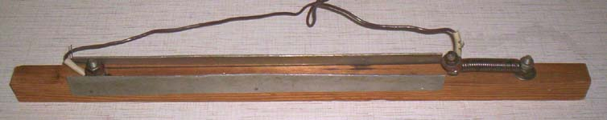
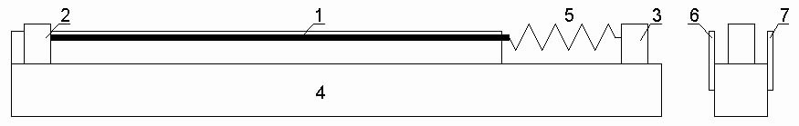

Термоаппарат для обеспечения гибочных работ с термопластичными листовыми материалами

Назначение
Устройство предназначено для нагревания до размягчения листовых материалов из термопластичных полимеров (полиэтилена, полипропилена, поливинилхлорида, полиметилметакрилата и т. п.) по линии дальнейшего сгиба.
Конструкция
Эскиз устройства показан на рис. 1.

Рис. 1. Конструкция термоаппарата.
Термоаппарат представляет собой нихромовую проволоку (1) диаметром около 1 мм длиной примерно 300 мм, натянутую между двумя винтами (2, 3), установленными на электроизоляционном основании (4). К этим же винтам крепятся токоподводы. Чтобы при нагревании проволока не провисала, используется подтягивающая пружина (5). Сбоку к основанию крепятся две ограничительные металлические пластины (6, 7), на которые устанавливается сгибаемый лист.
Порядок работы
Термоаппарат подключается к любому источнику питания напряжением 12 вольт (постоянное или переменное) с выходным током до 15 А [1]. После того, как проволока раскалится докрасна (на это требуется примерно полминуты), на ограничительные пластины устанавливается лист из термопластичного полимера таким образом, чтобы линия сгиба была расположена точно над проволокой. Далее производится нагрев места сгиба до размягчения полимера. Время нагрева зависит от толщины и материала листа и может составлять от единиц до десятков секунд. После размягчения лист немедленно сгибается на заданный угол и выдерживается в согнутом состоянии до затвердевания места сгиба.
Ссылки:
06.11.2010
Альтернативные источники
энергии
Компьютеры и
Интернет
Магнитные поля
Механотронные системы
Перспективные
разработки
Электроника и технология